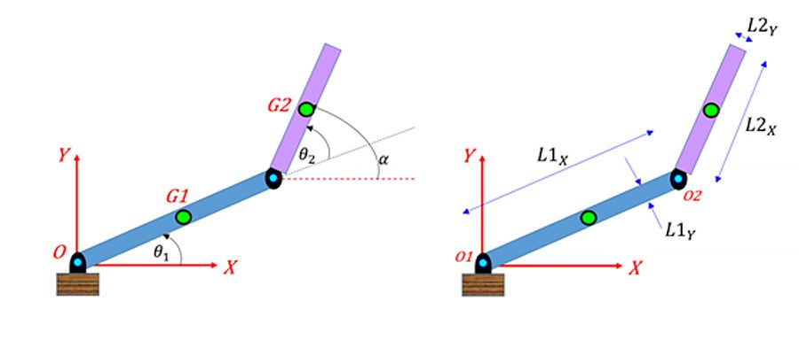

Optimizing the Trajectory of a Robotic Arm

Brief: This project is a direct application of the methods developed in my optimization algorithms project. Instead of optimizing benchmark functions, I optimized the joint parameters of a robotic arm so that its end-effector reaches a target point in 2D and 3D space. The project combines forward kinematics, analytically derived gradients, Armijo backtracking line search, and 3D visualization in Python.
Project Overview
The goal was to formulate target-reaching for a robotic arm as a numerical optimization problem. Given a desired point in space, the task is to find joint angles that minimize the squared distance between the end-effector and that target. This reframes motion planning as loss minimization: each optimization step updates the posture of the robot, and convergence corresponds to the arm reaching the target with minimal error.
Conceptually, this project extends my earlier work on first-order optimization into a more physically interpretable system. The same optimization logic is reused, but the objective function is now defined by the geometry of the robotic arm.
2D Formulation
I first studied a planar two-link robot arm with link lengths \(L_1\) and \(L_2\), and joint angles \(\theta_1\) and \(\theta_2\). The end-effector position is given by the forward-kinematics map:
\[ p_{\text{hand}}(\theta_1,\theta_2)= \begin{bmatrix} x_{\text{hand}}(\theta_1,\theta_2) \\ y_{\text{hand}}(\theta_1,\theta_2) \end{bmatrix} = \begin{bmatrix} L_1 \cos(\theta_1) + L_2 \cos(\theta_1+\theta_2) \\ L_1 \sin(\theta_1) + L_2 \sin(\theta_1+\theta_2) \end{bmatrix} \]For a target point \(p_{\text{target}} = (x_t, y_t)\), the objective is the squared Euclidean distance:
\[ J(\theta_1,\theta_2)=\|p_{\text{hand}} - p_{\text{target}}\|^2 = (x_h(\theta_1,\theta_2)-x_t)^2 + (y_h(\theta_1,\theta_2)-y_t)^2 \]I derived the analytical gradients with respect to each angle and used them inside gradient-based optimization routines:
\[ \frac{\partial J}{\partial \theta_1} = 2(x_h-x_t)\big(-L_1\sin(\theta_1)-L_2\sin(\theta_1+\theta_2)\big) + 2(y_h-y_t)\big(L_1\cos(\theta_1)+L_2\cos(\theta_1+\theta_2)\big) \] \[ \frac{\partial J}{\partial \theta_2} = 2(x_h-x_t)\big(-L_2\sin(\theta_1+\theta_2)\big) + 2(y_h-y_t)\big(L_2\cos(\theta_1+\theta_2)\big) \]This setup provides a clean inverse-kinematics problem: optimize the joint configuration until the hand reaches the desired location with minimal error.
3D Extension
I then extended the system to a 3-joint robotic arm in 3D. Each joint is parameterized by an azimuth angle \(\theta\) and an elevation angle \(\phi\), which allows the arm to be modeled in spherical coordinates.
With segment lengths \(L_1\), \(L_2\), and \(L_3\), the coordinates of the arm are:
\[ x_1 = L_1 \sin\phi_1 \cos\theta_1,\quad y_1 = L_1 \sin\phi_1 \sin\theta_1,\quad z_1 = L_1 \cos\phi_1 \] \[ x_2 = x_1 + L_2 \sin\phi_2 \cos(\theta_1+\theta_2),\quad y_2 = y_1 + L_2 \sin\phi_2 \sin(\theta_1+\theta_2),\quad z_2 = z_1 + L_2 \cos\phi_2 \] \[ x_3 = x_2 + L_3 \sin\phi_3 \cos(\theta_1+\theta_2+\theta_3),\quad y_3 = y_2 + L_3 \sin\phi_3 \sin(\theta_1+\theta_2+\theta_3),\quad z_3 = z_2 + L_3 \cos\phi_3 \]The corresponding loss function is:
\[ L(\theta_1,\phi_1,\theta_2,\phi_2,\theta_3,\phi_3) = (x_3-x_t)^2 + (y_3-y_t)^2 + (z_3-z_t)^2 \]In the Python implementation, I used segment lengths \(L_1 = 0.5\), \(L_2 = 0.7\), and \(L_3 = 0.5\), and evaluated the optimization on target-reaching tasks in 3D space.
Optimization Strategy
To optimize the joint variables, I reused first-order methods from the earlier optimization project, especially Gradient Descent and Nesterov Accelerated Gradient Descent (NAGD). A key component was Armijo backtracking line search, which adaptively selects the step size to ensure sufficient decrease in the objective while avoiding unstable updates.
This is important in robotic-arm optimization because the loss landscape can be sensitive to angle updates: an overly large step may overshoot the target, while a very small step can make convergence unnecessarily slow. Armijo backtracking provided a stable and efficient compromise.
Results
For the 3D simulation, I tested the methods on the target point \((0.6, 1.5, -0.73)\) with stopping criterion \(\|f(x_i) - f(x_{i-1})\|_2 < 10^{-6}\). NAGD converged much faster than standard Gradient Descent while also reaching a lower final objective value.
| Method | Iterations | Minimum Value | Gradient Norm |
|---|---|---|---|
| NAGD | 32 | 5.47e-07 | 0.0019 |
| Gradient Descent | 126 | 8.55e-06 | 5.8 × 10-5 |
In practice, this confirmed what I had already observed on benchmark functions: momentum-based first-order methods can provide a substantial advantage when the optimization landscape is more demanding. Here, that translated into faster target-reaching and better simulation behavior for the robotic arm.
Visualization
I used VPython to animate the 3D robotic arm and visualize how the joints evolve during optimization. This made the behavior of the algorithms much easier to interpret: instead of only inspecting convergence curves, I could directly observe the posture updates and the final approach to the target point.